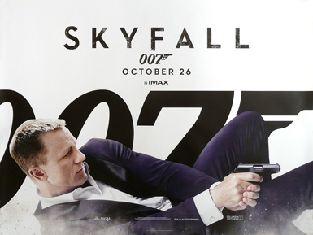
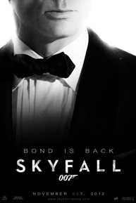
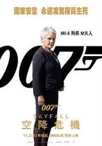
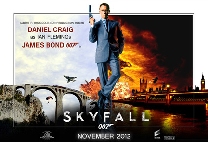
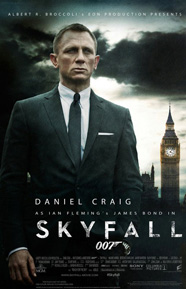
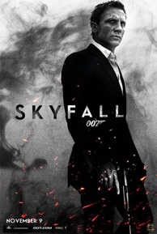
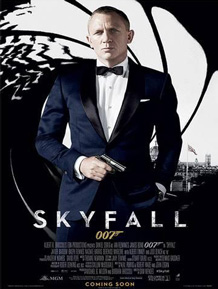
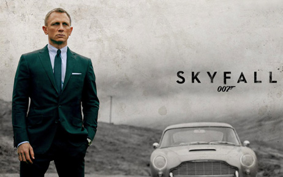
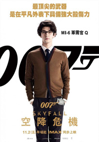

Barbara Broccoli
Neal Purvis
Robert Wade
John Logan
Kate Baird
Columbia Pictures
MI6 agents James Bond and Eve Moneypenny pursue mercenary Patrice, who has stolen a hard drive containing details of undercover agents. As Bond and Patrice fight atop a train, M orders Moneypenny to shoot Patrice from long range. Moneypenny misses and inadvertently hits Bond, who falls into a river. Bond is presumed dead and Patrice escapes.
Three months later M comes under pressure from Gareth Mallory, the chairman of the British parliament's Intelligence and Security Committee, to retire. MI6's servers are hacked and M receives a taunting computer message moments before the MI6 headquarters explode. Bond, who used his presumed death to retire, learns of the attack and returns to London. Although he fails a series of physical and psychological examinations, M approves his return to the field. Bond is ordered to identify Patrice's employer, recover the stolen hard drive, and kill Patrice. He meets Q, MI6's new quartermaster, who gives him a radio beacon and a Walther PPK pistol.
In Shanghai, Bond follows Patrice into a skyscraper but is unable to prevent him from killing a target. The two fight, but Patrice falls to his death before Bond can learn his employer's identity. Bond finds a casino token in Patrice's rifle case, which leads him to a casino in Macau. Bond is approached by Sévérine, Patrice's accomplice, and he asks to meet her employer. She warns him that he is about to be killed by her bodyguards, but promises to help Bond if he will kill her employer. Bond thwarts the attack and joins Sévérine on her yacht, where they have sex. They travel to an abandoned island off the coast of Macau where they are taken prisoner by the crew and delivered to Sévérine's employer, Raoul Silva. Silva, once an MI6 agent, has now turned to cyberterrorism and orchestrated the attack on MI6. Silva kills Sévérine, but Bond captures Silva for rendition to Britain.
At MI6's new underground headquarters, Q attempts to decrypt Silva's laptop. Q inadvertently gives the laptop access to the MI6 servers, which allows Silva to escape. Bond deduces that Silva wanted to be captured as part of a plan to kill M, whom he resents for disavowing him. Bond gives chase through the London Underground but loses Silva after a train crash. Silva attacks M during a public inquiry into her handling of the stolen hard drive but Bond arrives in time to repel the attack. M is saved from a bullet by Mallory and ends up in a car with Bond.
Bond and M travel to Skyfall, the Bond family estate in the Scottish Highlands. Bond instructs Q and Bill Tanner to leave an electronic trail for Silva to follow. Bond and M meet up with Skyfall's gamekeeper Kincade, and together the trio set up a series of booby traps throughout the house. When Silva's men arrive, Bond, M, and Kincade manage to kill most of them. M is wounded, but conceals it from Bond and Kincade. Silva himself arrives by helicopter with more men and heavy weapons, so Bond sends M and Kincade off through a priest hole to a chapel on the grounds. As the house is destroyed Bond escapes down the same tunnel and heads toward the chapel.
Silva survives the destruction of the house and follows Kincade and M to the chapel. He forces his gun into M's hand and presses his temple to hers, begging her to kill them both. Bond arrives and kills Silva by throwing a knife into his back, but M succumbs to her wounds and dies in Bond's arms. Following M's funeral, Moneypenny formally introduces herself to Bond and tells him she is retiring from field work to become secretary for the newly appointed M. Bond is summoned to M's office and finds that Mallory is his new boss.
The main cast of Skyfall was officially announced at a press conference held at the Corinthia Hotel in London on 3 November 2011, 50 years to the day after Sean Connery was announced to play James Bond in the film Dr. No. Daniel Craig returned as James Bond for the third time, saying he felt lucky to have the chance to appear as 007. Director Sam Mendes described Bond as experiencing a "combination of lassitude, boredom, depression [and] difficulty with what he's chosen to do for a living". Judi Dench returned as M for her seventh and final appearance in the role. Over the course of the film, M's ability to run MI6 is repeatedly called into question, culminating in a public inquiry into her running of the service.
Javier Bardem was cast as the film's principal villain, Raoul Silva, a cyber-terrorist who is seeking revenge against those he holds responsible for betraying him. Bardem described Silva as "more than a villain", while Craig stated that Bond has a "very important relationship" to Silva. In casting the role, director Sam Mendes admitted that he lobbied hard for Bardem to accept the part. Mendes saw the potential for the character to be recognised as one of the most memorable characters in the series and wanted to create "something [the audience] may consider to have been absent from the Bond movies for a long time". He felt that Bardem was one of the few actors up to the task of becoming "colourless" and existing within the world of the film as something more than a function of the plot. In preparing for the role, Bardem had the script translated into his native Spanish to better understand his character, which Mendes cited as being a sign of the actor's commitment to the film. Bardem dyed his hair blond for the role after brainstorming ideas with Mendes to come up with a distinct visual look for the character, which led some commentators to observe a similarity between the character and WikiLeaks founder Julian Assange. Bérénice Marlohe was cast as Séverine, a character who had been saved from the Macau sex trade by Silva and now works as his representative. Marlohe described her character as being "glamorous and enigmatic", and that she drew inspiration from GoldenEye villain Xenia Onatopp (played by Famke Janssen) in playing Séverine.
Ralph Fiennes was cast as Gareth Mallory, a former lieutenant colonel in the British Army and now the chairman of the Intelligence and Security Committee, which gives him the authority to regulate MI6. At the end of the film, Mallory becomes the head of MI6, assuming the title of M. During production, Fiennes stated that he could not say anything specific about the role other than that it was a "really interesting part which is really quite fun". To play the returning character of Miss Moneypenny, Naomie Harris was cast. Harris' role was initially presented as that of Eve, an MI6 field agent who works closely with Bond. Despite ongoing speculation in the media that Harris had been cast as Miss Moneypenny, this was not confirmed by anyone involved in production of the film, with Harris herself even going so far as to dismiss claims that Eve was in fact Moneypenny, stating that "Eve is not remotely office-bound". According to Harris, Eve "[believes] she is Bond's equal, but she is really his junior". Another character returning to the series was Q, this time played by Ben Whishaw. Mendes had initially declined to confirm which part Whishaw would play, and later said the idea of the re-introduction was his, saying "I offered ideas about Moneypenny, Q and a flamboyant villain and they said yes". To play the part of Kincade, Mendes cast Albert Finney. The producers briefly considered approaching Sean Connery to play the role in a nod to the 50th anniversary of the film series, but elected not to as they felt Connery's presence would be seen as stunt casting and disengage audiences from the film.
Production of Skyfall was suspended throughout 2010 because of MGM's financial troubles. Preproduction resumed following MGM's exit from bankruptcy on 21 December 2010; in January 2011, the film was officially given a release date of 9 November 2012 by MGM and the Broccoli family, with production scheduled to start in late 2011. Subsequently, MGM and Sony Pictures announced that the UK release date would be brought forward to 26 October 2012, two weeks ahead of the US release date, which remained scheduled for 9 November 2012. The film's budget is estimated to have been between US$150 million and $200 million, compared to the $200 million spent on Quantum of Solace.
Principal photography was scheduled to take up to 133 days, although the actual filming took 128. Filming began on 7 November 2011 in and around London, with the cinematographer Roger Deakins using Arri Alexa digital cameras to shoot the entire film. Scenes were shot in London Underground stations, Smithfield car park in West Smithfield, the National Gallery, Southwark, Whitehall, Parliament Square, Charing Cross station, the Old Royal Naval College in Greenwich, Cadogan Square and Tower Hill. St Bartholomew's Hospital was used as the filming location for the scene in which Bond enters MI6's underground headquarters, while the Old Vic Tunnels underneath Waterloo Station in London served as the MI6 training grounds. For the meeting between Q and Bond, production worked during the National Gallery's closing hours at night. The Department of Energy and Climate Change was used in the scene when Bond stood on the roof near the end of the film. The Vauxhall Bridge and Millbank was closed to traffic for filming the explosion at the MI6 headquarters at Vauxhall Cross. Unlike The World Is Not Enough, which also featured an explosion at the building - which was filmed at a large-scale replica - the explosion in Skyfall was added digitally in post-production. Shooting of the finale was planned to take place at Duntrune Castle in Argyll, but was cancelled shortly after filming began. Glencoe was instead chosen for filming of these scenes. Although supposedly based in Scotland, Bond's family home of Skyfall was constructed on Hankley Common in Surrey using plywood and plaster to build a full-scale model of the building.
Production moved to Turkey in March 2012, with filming reported to be continuing until 6 May. Production was expected to take three months in the country. Adana stands in for the outskirts of Istanbul in the film. A group of Turkish teenagers infiltrated a closed set in a railway sidings in Adana to film rehearsals of a fight scene on top of a train before being caught by security. The train scene depicted in trailers showed the Varda Viaduct outside Adana. Bond stunt double Andy Lister dived backwards off the 300-foot drop for the scene. A crane was set up on a train carriage to hold a safety line. Parts of Istanbul - including the Spice Bazaar, Yeni Camii, the Grand Post Office, Sultanahmet Square and the Grand Bazaar - were closed for filming in April. Store owners in the affected areas were reportedly allowed to open their shops, but were not allowed to conduct business, instead being paid $418 per day as compensation. Production faced criticism for allegedly damaging buildings while filming a motorcycle chase across rooftops in the city. Michael G. Wilson denied these claims, pointing out that the film crew had removed sections of rooftops before filming began and replaced them with replicas for the duration of the shoot; when filming finished, the original rooftops would be restored. The production team negotiated with 613 part owners of the Calis Beach in Fethiye, to film along the coastline.
Mendes confirmed that China would be featured in the film, with shooting scheduled to take place in Shanghai and "other parts" of the country. John Logan described that production deliberately sought out locations that were "in opposition" to London with an exotic quality that made them "places for Bond to be uncomfortable". Many scenes were not filmed on location in Shanghai. Instead, the Virgin Active pool in London's Canary Wharf acted as Bond's hotel pool in Shanghai, and the entrance to London's fourth tallest building, Broadgate Tower, was also lit up to look like an office building there; for the aerial footage of Shanghai, the crew received rare access to shoot from a helicopter on loan from the Chinese government. The interior of the Golden Dragon casino in Macau where Bond met Séverine was constructed on a sound stage at Pinewood Studios, with 300 floating lanterns and two 30-foot high dragon heads lighting the set. Additional scenes were filmed at Ascot Racecourse, standing in for Shanghai Pudong International Airport. The first official image from the film was released on 1 February 2012, showing Daniel Craig on set at Pinewood, within a recreation of a skyscraper in Shanghai.
Set reports dated April 2012 recorded that scenes would be set on Hashima Island, an abandoned island off the coast of Nagasaki, Japan. In actuality, the scene was set on an unnamed island off the coast of Macau, though based on the real-life Hashima. Sam Mendes explained that the location was a hybrid of a set and computer-generated images. Production chose to include the Hashima model after Daniel Craig met with Swedish film-maker Thomas Nordanstad whilst shooting The Girl with the Dragon Tattoo in Stockholm. Nordanstad, who produced a short documentary on Hashima Island in 2002 entitled Hashima, recalled Craig taking extensive notes on the island at the time of the meeting, but was unaware of his interest in it until Skyfall was released.
The film was later converted into the IMAX format for projection in IMAX cinemas. Deakins was unaware that the film was to be released on IMAX until after he had made the decision to shoot the film with the Arri Alexa cameras, and was unhappy with the IMAX tests made from his footage as the colours "didn't look great". After exploring the IMAX system further and discovering that the IMAX Corporation was using their proprietary re-mastering process, Deakins had further tests made without the process and found that "the images looked spectacular on the big IMAX screen", quelling his doubts about the format.








